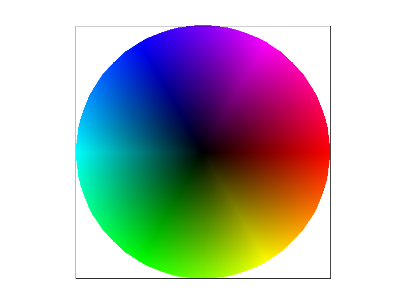

Overview
Give a high-level overview of what you implemented in this project. Think about what you've built as a whole. Share your thoughts on what interesting things you've learned from completing the project.
Section I: Rasterization
Part 1: Rasterizing single-color triangles
In this task we enable rasterizing of single triangles of constant color which can be composed to rasterize more complex shapes.
Given 3 pixel coordinates to rasterize a triangle, we first determine the smallest bounding box that contains the entire triangle within the sample buffer.
We then go through each pixel within the triangle bounding box, and then perform the 3-line test on the center of the pixel (flooring the coordinates and offsetting by 0.5).
The center point is considered to be inside or on the triangle if the 3-line test determines the point is inside all of the lines or “outside” all of the lines (inverted case).
If the point is valid, we continue with rasterizing the point (calling the rasterize_point function), which maps the pixel in the sample buffer with the specified color.
Our algorithm is no worse than one that checks each sample within the bounding box of the triangle because we only check pixels within the range of the
minimum and maximum x coordinates and minimum and maximum y coordinates. This keeps the check within the bounding box of the triangle.

|
Part 2: Antialiasing triangles
In this task, we implement supersampling to reduce aliasing and jaggies in the simple triangle rasterization in task 1. Supersampling entails sampling at a higher sampling rate than the frame buffer into our sample buffer and then using this extra sampling for smoother rasterization in the frame buffer.
Data Structures Modified: We updated the sample_buffer to hold height * width * sample_rate colors, enabling us to store the color information of every single super sample. For sample_rate of 1, this will match the resolution of the framebuffer.
Our supersampling algorithm is as follows:
- In rasterize_triangle, we scale the input triangle coordinates by sqrt(sample_rate) pixels in each axis so the scaled coordinates match the pixel coordinates as in the higher resolution version (the resized sample_buffer). We then iterate over the pixels of the triangle bounding box in terms of the remapped pixel coordinates. At higher sampling rates, this means we test more points since each original (unscaled) pixel was subdivided into sample_rate pixels. Iterating over these pixels, we conduct the 3-line-test as before and fill the color into the sample_buffer if the pixels are within the triangle. This process should correctly map colors in the higher resolution sample_buffer.
- Since only rasterize_triangle had supersampling, we needed to ensure that rasterize_point and rasterize_line (which are not supersampled), correctly map colors into the resized sample_buffer. This process was in the fill_pixel function. The default fill_pixel used to directly map 1 pixel from rasterize_line or rasterize_point to a single pixel in the sample_buffer. However, if the sampling_rate is now greater than 1 and we resize the sample_buffer, 1 pixel in rasterize_line or rasterize_point actually maps to sample_rate number of pixels in the sample_buffer, so we modified fill_pixel to correctly fill in all the necessary pixels based on the sampling_rate.
- Finally, in resolve_to_framebuffer, we need to map our supersampled pixels back into the single pixel that actually maps to the framebuffer. To do this, we iterate over the pixels of the framebuffer and pick out the sample_rate number of pixels in the sample_buffer associated with the pixel. We then average the color of all these subsamples to set the pixel color of the framebuffer.
For lines and points, supersampling won’t change anything since it is not implemented (i.e. all subsamples are the same color), but supersampling is useful for toning down jaggies and any aliasing when rasterizing shapes based on triangles. It allows more consideration of the fact that the one part of the pixel you sample might not reflect the entire pixel’s color. Instead pixels are colored based on how much of the pixel is actually in the triangle, which allows for smoother changes in color at the edges of triangles as opposed to sharp abrupt changes without supersampling (only using a single center point sample) that make aliasing more prominent. Viewed at a larger scale, the image’s edges also look smoother with the antialiasing.
Supersampling entailed the following modifications to the rasterization pipeline (based on steps from cs184 project 1, task 2 specification):
- We modified the line/triangle/point rasterization step. Rasterizing the triangles for the interior image will supersample based on the sample_rate into a sample_buffer that may be resized so not all pixels of the original pixel may map to the same color. Additionally rasterizing points and lines will fill into multiple pixels in the sample_buffer based on larger sample rates (Step 3).
- When rasterizing the square boundary, since lines are being rasterized, the sample_buffer in between may map multiple pixels if the sample is greater than 1 but this does not have any effect on the actual framebuffer since they are averaged out again (Step 4).
- Based on the sample_rate increasing, it is no longer a 1:1 mapping between the sample_buffer and framebuffer, so instead of directly mapping the sample_buffer pixels to the framebuffer pixels, colors of the sample_buffer are averaged and then the framebuffer takes on the average color of the supersampled pixels (Step 5).
Below are the results of rendering basic/test4.svg at from sample rates of 1, 4, and 16, which show less aliasing and jaggies as the sample_rate increases. In the zoomed in view, we can see different shades of the original color (from the supersampling and averaging) on the border once the sample_rate is greater than 1, and comparing sample_rate 4 and 16 we can see a larger variation in shades of the original color with sample_rate of 16. These extra variations of color let the border seem smoother and more accurate on the main rendered image.
|
|
|

|
Part 3: Transforms
In this task, we implemented pixel transformations including translation, scaling, and rotation. As a demonstration, we rendered the given cubeman with some modifications. We gave the cubeman a fancy shirt and a hat, and had him dance with one arm up and one arm down, picking up one leg, bent at the knee.
Section II: Sampling
Part 4: Barycentric coordinates
Barycentric coordinates linearly interpolate values at triangle vertices, assigning weights for each triangle vertex based on which point you are interpolating for (also could be considered proportion calculation). For any point, you can calculate weights of triangle vertices such that alpha, beta, and gamma sum up to 1. This is useful for creating color blends and gradients. For example, if you look at the image aid of the triangle below, for each point inside the triangle, after calculating the weight for each vertex/color (red, green, and blue) and by combining the weighted colors together, you can get a color that is a gradient between the 3 vertices. In this case, point V has more green and blue in it, and less red, and which will be reflected in the three corresponding alpha, beta, and gamma weights.

|
|

|
Part 5: "Pixel sampling" for texture mapping
screenshots using nearest sampling at 1 sample per pixel, nearest sampling at 16 samples per pixel, bilinear sampling at 1 sample per pixel, and bilinear sampling at 16 samples per pixel.

|
|

|

|
Part 6: "Level sampling" with mipmaps for texture mapping
show us four versions of our frog image, using the combinations of L_ZERO and P_NEAREST, L_ZERO and P_LINEAR, L_NEAREST and P_NEAREST, as well as L_NEAREST and P_LINEAR

|
|
|
|
|
Section III: Art Competition
If you are not participating in the optional art competition, don't worry about this section!